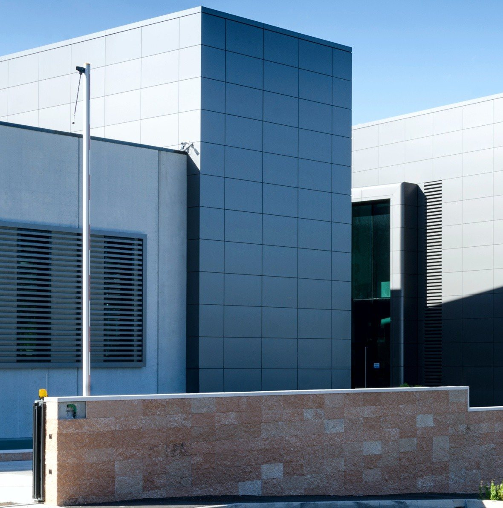
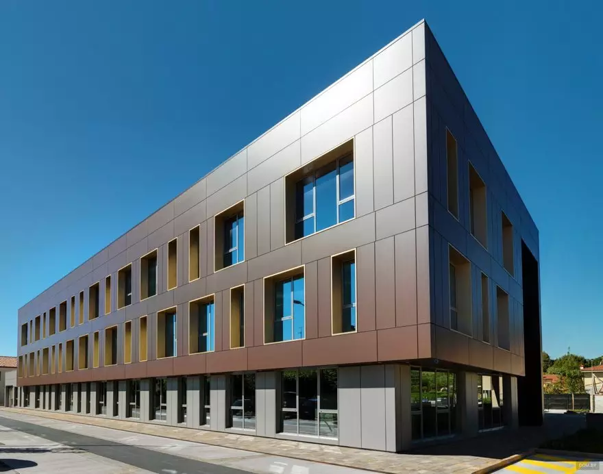
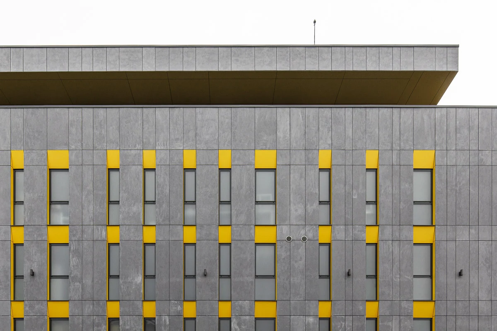

Blog
Approfondimenti sulle facciate ventilate
Guide pratiche su materiali, funzionamento e cantiere, per committenti, tecnici e amministratori.

GuideCos’è una facciata ventilata e come funziona
Un rivestimento staccato dal muro, un’intercapedine d’aria e un isolante continuo: come è fatto il sistema e perché protegge l’edificio meglio di un intonaco.

MaterialiGres, fibrocemento, legno o composito: come scegliere il rivestimento
Quattro materiali, quattro caratteri diversi. Un confronto pratico per orientarsi tra estetica, peso, manutenzione e campi d’impiego.

CantiereFacciata ventilata su un edificio esistente: le fasi dell’intervento
Dal sopralluogo alla consegna: cosa succede in cantiere quando si riveste un edificio già costruito, e quali verifiche fare prima di iniziare.